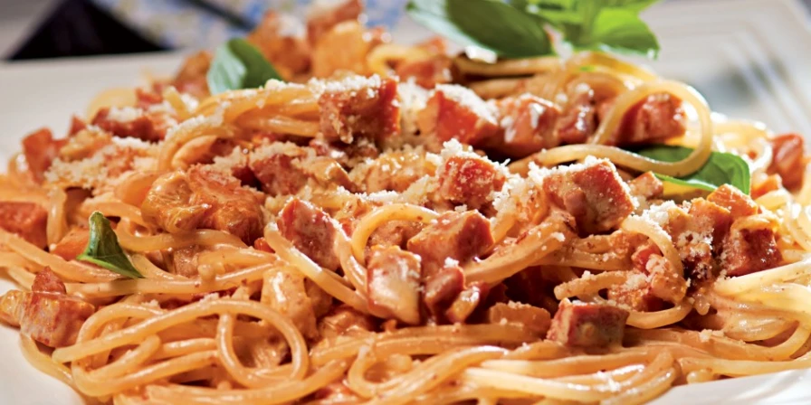
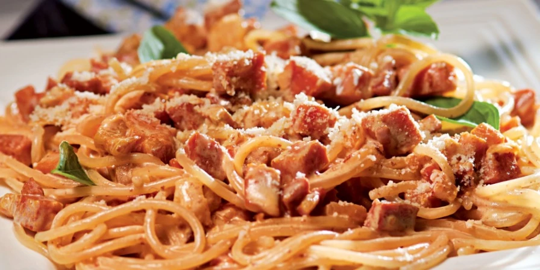

MACARRONADA
 


INGREDIENTES:
carne moída a gosto
macarrão refogado na manteiga a gosto
1 lata de milho verde
1 lata de ervilha
1 lata de creme de leite
1 lata de molho de tomate
MODO DE PREPARO:
Em uma panela, leve a carne moída temperada ao fogo e adicione o milho verde e a ervilha
Misture tudo e deixe cozinhar por 30 minutos
Desligue o fogo e acrescente o creme de leite e o molho de tomate
Incorpore o macarrão refogado na manteiga e misture bem
Macarronada tradicional